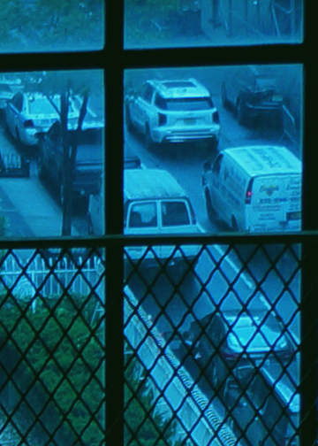
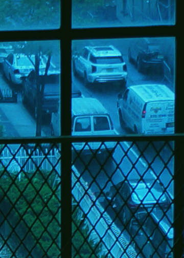
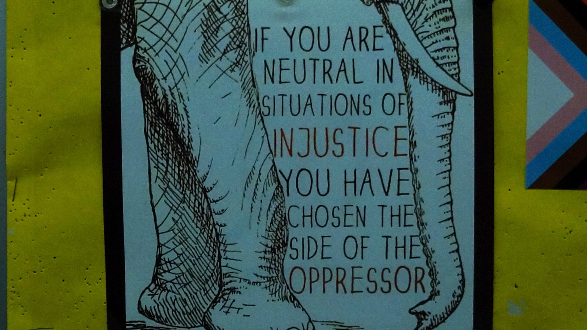
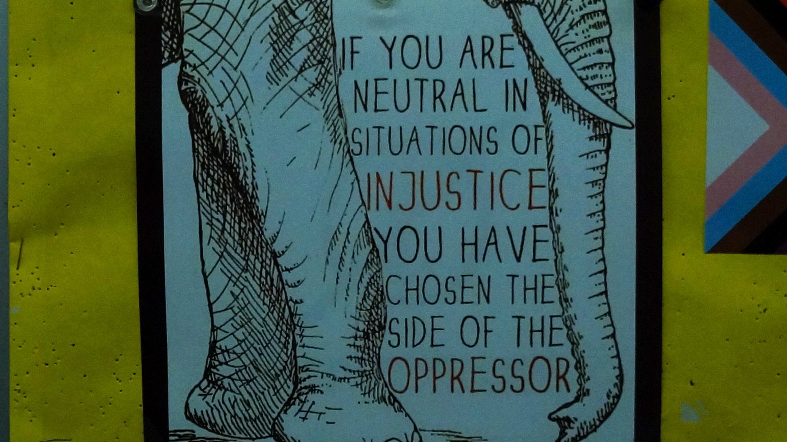

I chose this image because the unedited version came out very blue which reminded me of the colors seen in the movie Twilight (2008). I wanted to balance out the darkness of the blue with a lighter color so I made the hue more yellow. I also adjusted the brightness of the image so the subjects could be seen more.
 

I chose this image because I like the message the poster displays. I changed the exposure, saturation, contrast, and brightness to make the other surrounding colors fade into the background more and make the letters on the main poster darker, making the message stick out more.
HOME